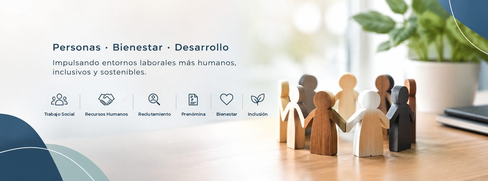

Recursos Humanos
Gestión del capital humano y planificación estratégica del área, alineada a las necesidades de la operación.

Recursos Humanos · Monterrey
Soy profesional de Recursos Humanos con más de ocho años de experiencia en el sector salud, en retail y en consultoría de talento en Monterrey. Mi trabajo abarca el ciclo completo del colaborador: atraer y contratar al talento adecuado, administrar al personal y preparar la información de prenómina.
Desde el Trabajo Social aporto una mirada humana del entorno laboral: escuchar, acompañar y construir ambientes de trabajo más inclusivos y sostenibles.
Gestión del capital humano y planificación estratégica del área, alineada a las necesidades de la operación.
Acompañamiento a colaboradores, atención de casos y canalización a apoyos y servicios.
Atracción, entrevista y selección de personal, del perfil del puesto hasta la contratación.
Control de incidencias, asistencias y movimientos del personal para un cálculo de nómina sin errores.
Altas, bajas y expedientes del personal, con documentación ordenada y al día.
Entornos laborales más humanos, inclusivos y sostenibles, donde las personas puedan desarrollarse.
Famsa
Balam Talento Estratégico
OCA Hospital
Famsa
Busco sumarme a una organización en Monterrey y su área metropolitana en Recursos Humanos, Trabajo Social, Reclutamiento o Nóminas.